2017-05-18 21:04:52
目录
数据结构
ts、xts、zoo类
stats内置的ts类
> str(nhtemp) Time-Series [1:60] from 1912 to 1971: 49.9 52.3 49.4 51.1 49.4 47.9 ...
xts包的xts类
> str(as.xts(nhtemp)) An ‘xts’ object on 1912-01-01/1971-01-01 containing: Data: num [1:60, 1] 49.9 52.3 49.4 51.1 49.4 47.9 49.8 50.9 49.3 51.9 ... Indexed by objects of class: [Date] TZ: UTC xts Attributes: NULL
zoo包的zoo类
> str(as.zoo(nhtemp)) ‘zooreg’ series from 1912 to 1971 Data: num [1:60] 49.9 52.3 49.4 51.1 49.4 47.9 49.8 50.9 49.3 51.9 ... Index: num [1:60] 1912 1913 1914 1915 1916 ... Frequency: 1
定距时间序列
ts(data = NA, start = 1, end = numeric(), frequency = 1,
deltat = 1, ts.eps = getOption("ts.eps"), class = , names = )
- frequency: 12(月), 4(季度), 1(年)
- start/end: 起止时间
> ts(1:21, freq=12, start=1990)
Jan Feb Mar Apr May Jun Jul Aug Sep Oct Nov Dec
1990 1 2 3 4 5 6 7 8 9 10 11 12
1991 13 14 15 16 17 18 19 20 21
> ts(1:7, freq=4, start=c(1990, 2))
Qtr1 Qtr2 Qtr3 Qtr4
1990 1 2 3
1991 4 5 6 7
不规则时间序列
xts(x = NULL, order.by = index(x), frequency = NULL, unique = TRUE,
tzone = Sys.getenv("TZ"), ...)
- order.by: 时间/日期向量
- frequency: order.by的频率
> xts(1:5, order.by=as.Date("1990-1-1")+c(0,3,5,11,12))
[,1]
1990-01-01 1
1990-01-04 2
1990-01-06 3
1990-01-12 4
1990-01-13 5
可视化
时间序列图: plot.ts
invisible(Sys.setlocale("LC_TIME", "C"))
plot(nhtemp, main="ts")
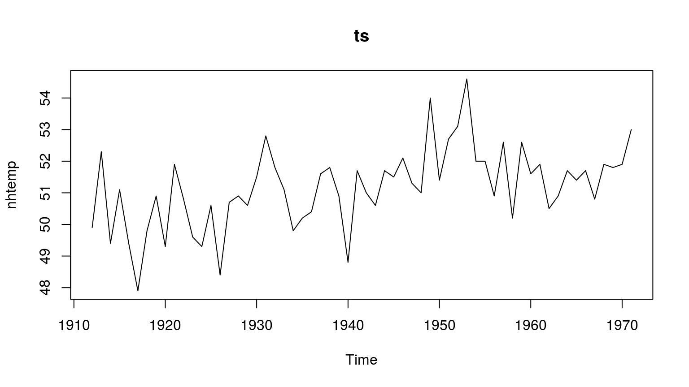
时间序列图: plot.xts
library(xts)
plot(xts(1:21, order.by=as.Date("1990-1-1")+cumsum(rep(c(1,3,7,11:14), 3))), main="xts")
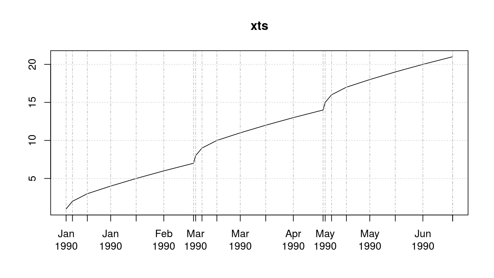
时间序列图: quantmod包
library(quantmod); data(sample_matrix) chartSeries(as.xts(sample_matrix))
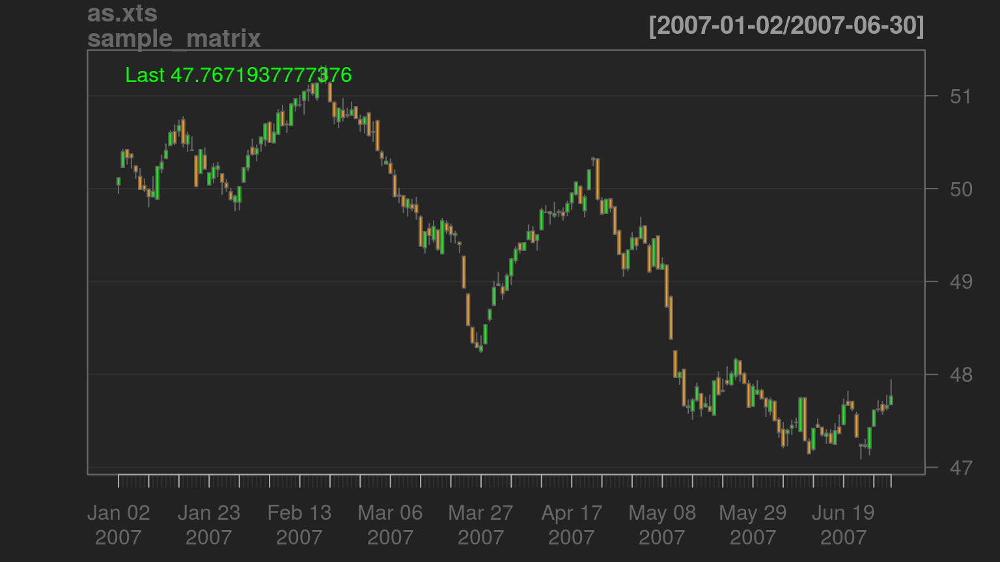
时间序列图: dygraphs包
library(dygraphs) dyCandlestick(dygraph(sample_matrix))
分解时间序列 Decomposition
季节性和非季节数据
- 季节性数据包括3种成分的变异: 趋势性、季节性、不规则部分
plot(as.xts(AirPassengers))
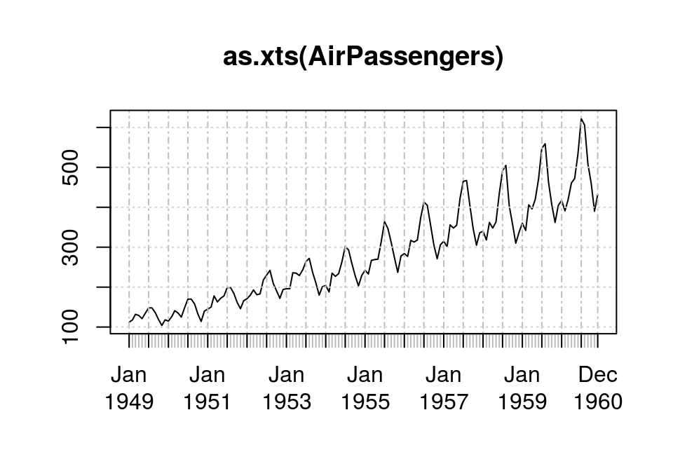
- 非季节性数据包括2种成分的变异: 趋势性、不规则部分
plot(as.xts(discoveries))
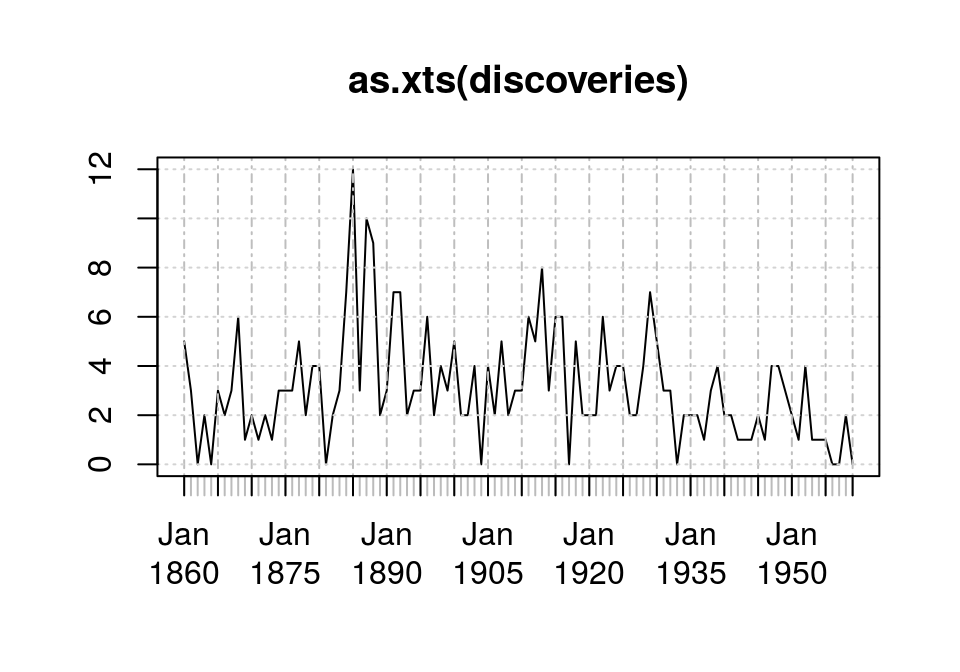
季节性数据(1) - decompose移动平均法
3个成分: trend, seasonal, random
- 相加模型
plot(decompose(AirPassengers))
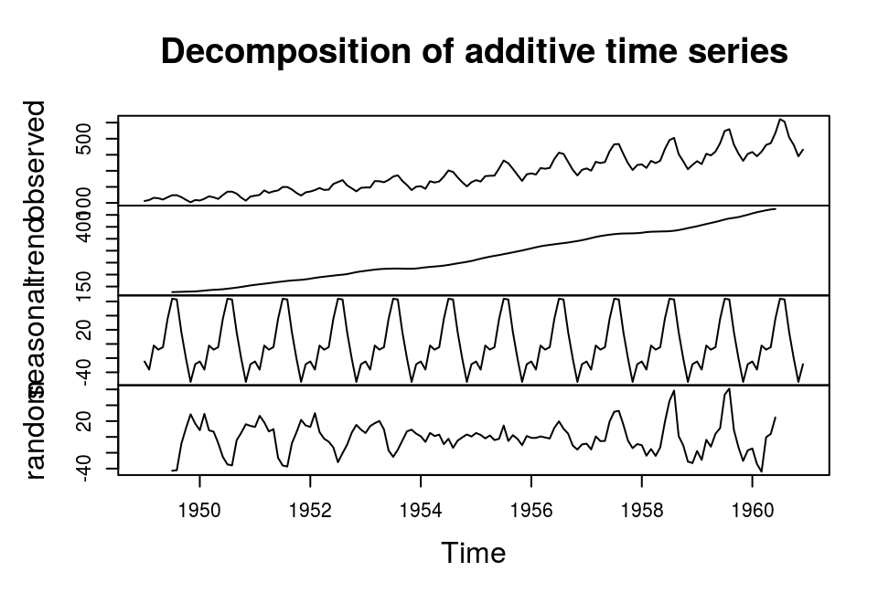
- 相乘模型
plot(decompose(AirPassengers, type="multiplicative"))
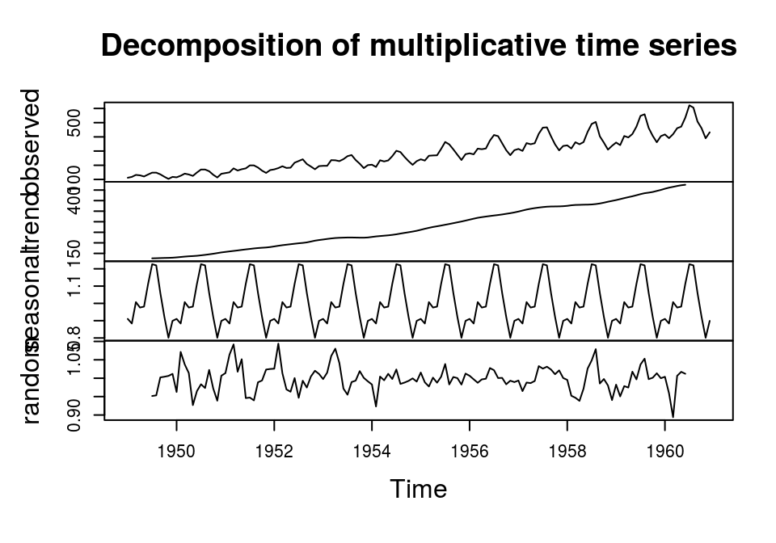
季节性数据(2) - 局部加权回归法STL
3个成分: seasonal, trend, remainder
plot(stl(AirPassengers, s.window="periodic"))
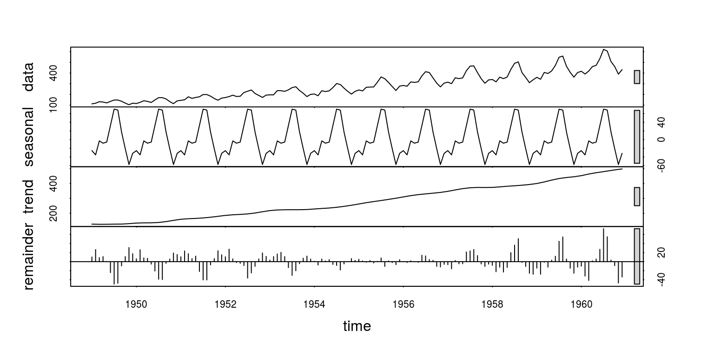
季节性数据(3) - 调整
调整不关注的变异因素(如调整季节因素seasonal)
plot(AirPassengers - decompose(AirPassengers)$seasonal)
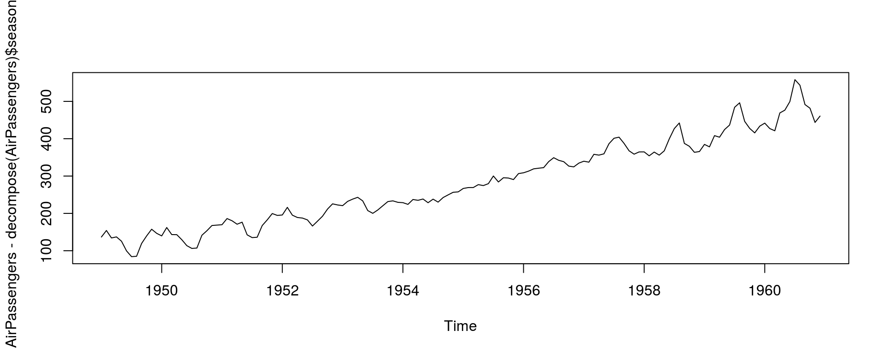
非季节性数据
平滑法(TTR::SMA)移动时间序列
library(TTR); library(xts)
plot(as.xts(discoveries))
for (i in 1:20) lines(as.xts(SMA(discoveries, n=i)), col=topo.colors(20)[i])
legend("topright", legend=1:20, text.col=topo.colors(20), ncol=5, title="Moving Average", title.col="black")
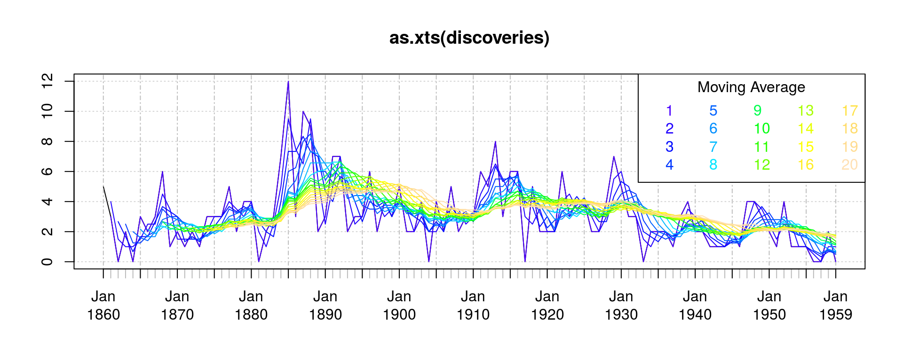
指数平滑法
(Exponential Smoothing)
适用条件
用于描述时间序列数据和作短期预测，并不试图解释和理解成因。
指数平滑法计算出的预测区间，其预测误差必须是不相关的，且服从零均值、方差不变的正态分布
语法: HoltWinters(x, alpha=NULL, beta=NULL, gamma=NULL, ...)
| 指数平滑法 | 数据模型 | 趋势 | 季节变动 | alpha | beta | gamma |
|---|---|---|---|---|---|---|
| 简单指数平滑法 | 相加模型 | 恒定水平 | 没有季节性 | 0-1 | FALSE | FALSE |
| Holt指数平滑法 | 可描述为相加模型 | 增长或降低趋势 | 没有季节性 | 0-1 | 0-1 | FALSE |
| Holt-Winters指数平滑法 | 可描述为相加模型 | 增长或降低趋势 | 存在季节性 | 0-1 | 0-1 | 0-1 |
简单指数平滑法(1)
[1] 是否满足要求
plot(as.xts(Nile))

[2] HoltWinters
> HoltWinters(Nile, beta=FALSE, gamma=FALSE)
Holt-Winters exponential smoothing without
trend and without seasonal component.
Call:
HoltWinters(x = Nile, beta = FALSE, gamma = FALSE)
Smoothing parameters:
alpha: 0.2465579
beta : FALSE
gamma: FALSE
Coefficients:
[,1]
a 805.0389
alpha越接近0，则近期数据对预测的贡献越小
简单指数平滑法(2)
[3] 预测
library(forecast) hw <- HoltWinters(Nile, beta=F, gamma=F) forec <- forecast(hw, h=10); plot(forec) lines(hw$fitted[,1], col='blue', lwd=2)

[4] 自相关检验及Ljung-Box检验
acf(forec$residuals, lag.max=20, na=na.pass)

> Box.test(forec$residuals, lag=20, type="Ljung-Box") ... X-squared = 15.619, df = 20, p-value = 0.74
p值>0.05，不足以判定样本内预测误差在滞后1-20阶时是非零自相关的。(可认为不规则部分是白噪声)
简单指数平滑法(3)
[5] 预测误差诊断
hist(forec$residuals, freq=FALSE) lines(density(forec$residuals, na.rm=T), lwd=2)

预测误差大体服从零均值正态分布，但前期波动较后期大(方差有变化)。 模型可能仍有改良空间。
plot(forec$residuals, main="Forecast Residuals")

Holt指数平滑法(1)
[1] 是否满足要求
plot(as.xts(LakeHuron))
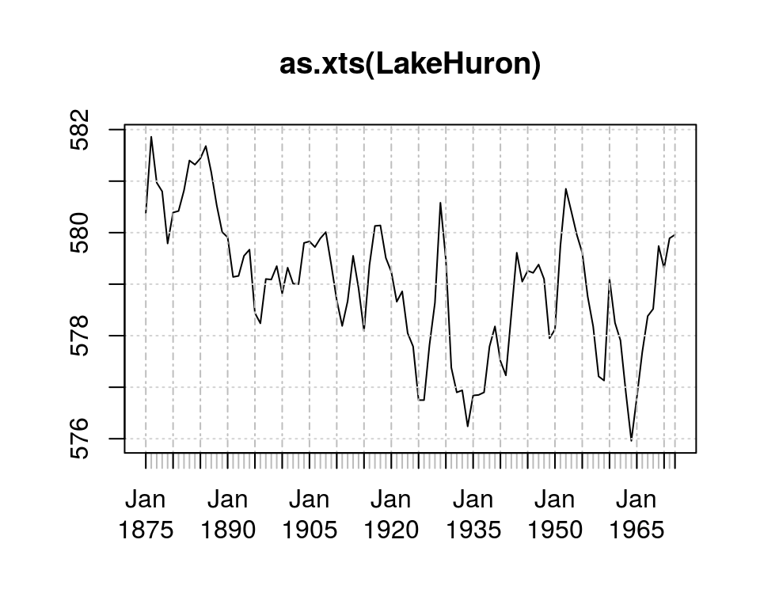
[2] HoltWinters
> HoltWinters(LakeHuron, gamma=FALSE)
Holt-Winters exponential smoothing with
trend and without seasonal component.
Call:
HoltWinters(x = LakeHuron, gamma = FALSE)
Smoothing parameters:
alpha: 1
beta : 0.1793351
gamma: FALSE
Coefficients:
[,1]
a 579.9600000
b 0.2300602Holt指数平滑法(2)
[3] 预测
hw <- HoltWinters(LakeHuron, gamma=FALSE) forec <- forecast(hw, h=10); plot(forec) lines(hw$fitted[,1], col='blue', lwd=2)
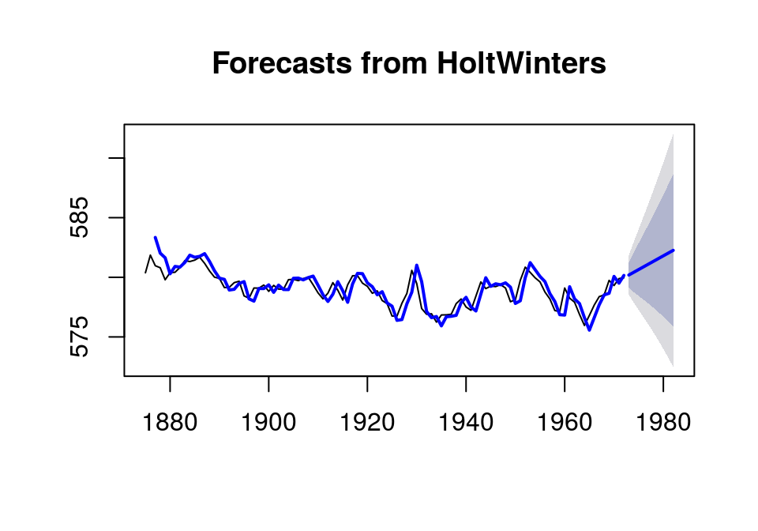
[4] 自相关检验及Ljung-Box检验
acf(forec$residuals, lag.max=20, na=na.pass)
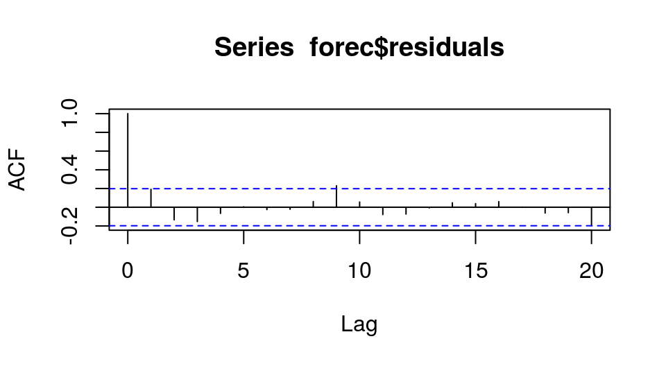
> Box.test(forec$residuals, lag=20, type="Ljung-Box") ... X-squared = 22.581, df = 20, p-value = 0.3098
p值>0.05，不足以判定样本内预测误差在滞后1-20阶时是非零自相关的。(可认为不规则部分是白噪声)
Holt指数平滑法(3)
[5] 预测误差诊断
hist(forec$residuals, freq=FALSE) lines(density(forec$residuals, na.rm=T), lwd=2)
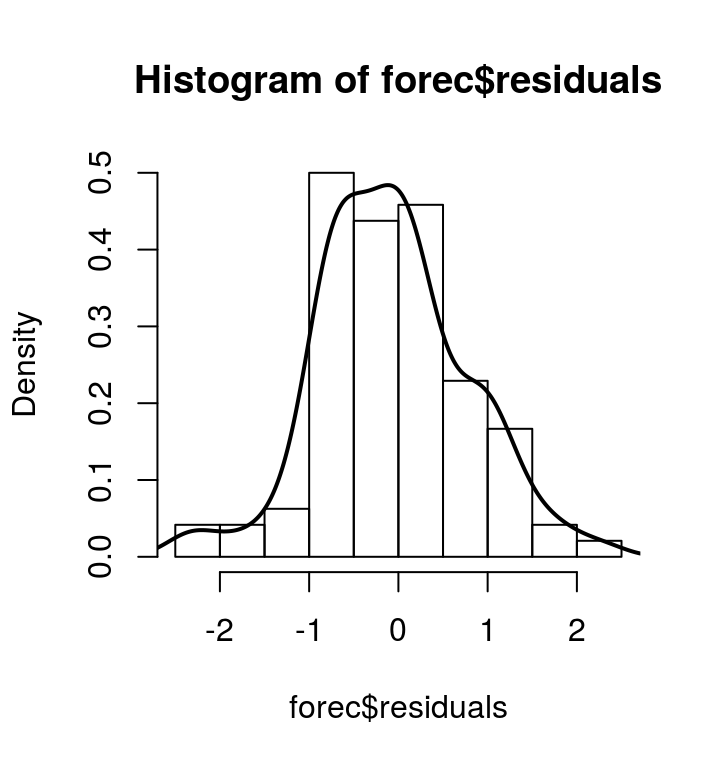
预测误差大体服从零均值正态分布，方差前后也大体无变化。 模型可不用再改良。
plot(forec$residuals, main="Forecast Residuals")
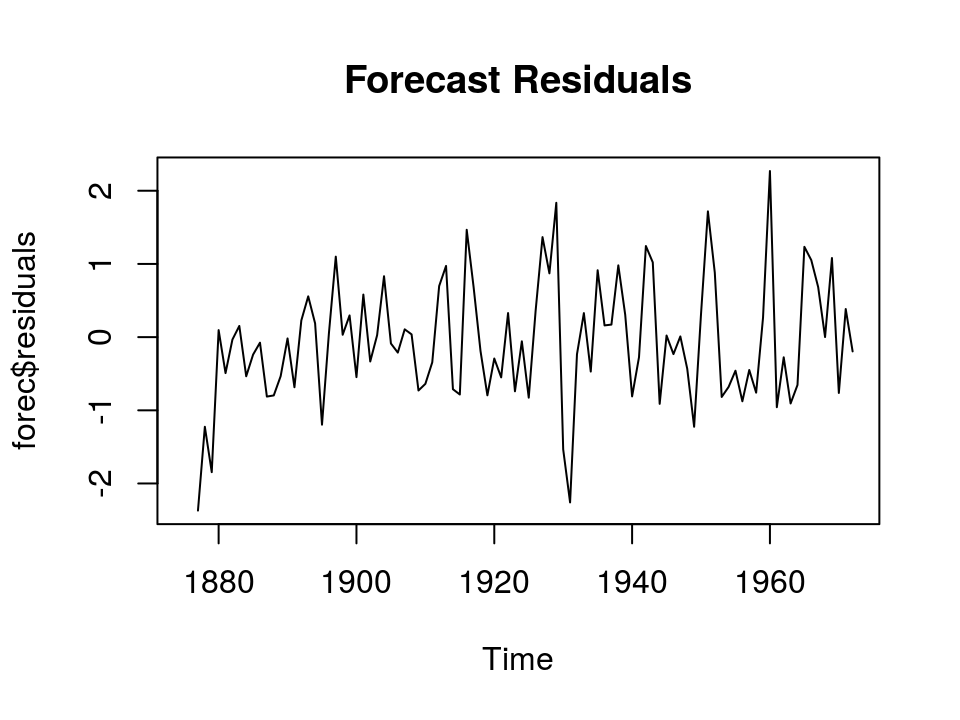
Holt-Winters指数平滑法(1)
[1] 是否满足要求
plot(as.xts(co2))
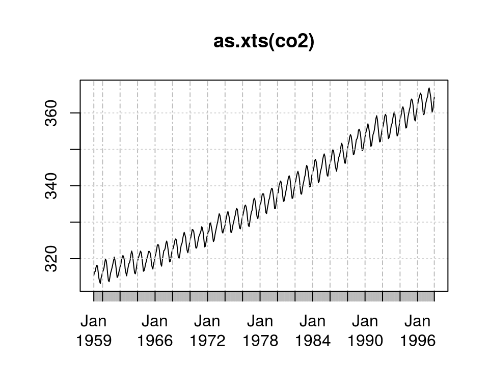
[2] HoltWinters
> HoltWinters(co2)
Smoothing parameters:
alpha: 0.5126484
beta : 0.009497669
gamma: 0.4728868
Coefficients:
[,1]
a 364.7616237
b 0.1247438
s1 0.2215275
s2 0.9552801
s3 1.5984744
s4 2.8758029
s5 3.2820088
s6 2.4406990
s7 0.8969433
s8 -1.3796428
s9 -3.4112376
s10 -3.2570163
s11 -1.9134850
s12 -0.5844250Holt-Winters指数平滑法(2)
[3] 预测
hw <- HoltWinters(co2) forec <- forecast(hw, h=50); plot(forec) lines(hw$fitted[,1], col='blue', lwd=2)
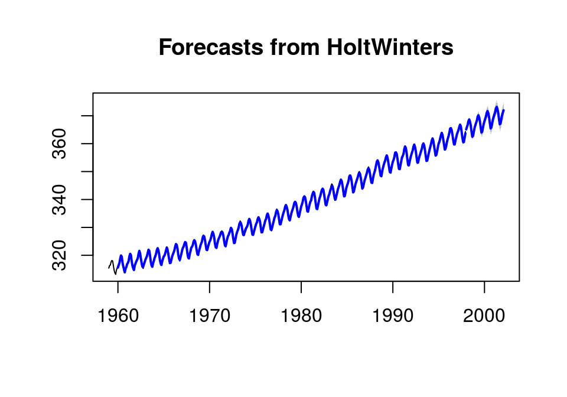
[4] 自相关检验及Ljung-Box检验
acf(forec$residuals, lag.max=20, na=na.pass)
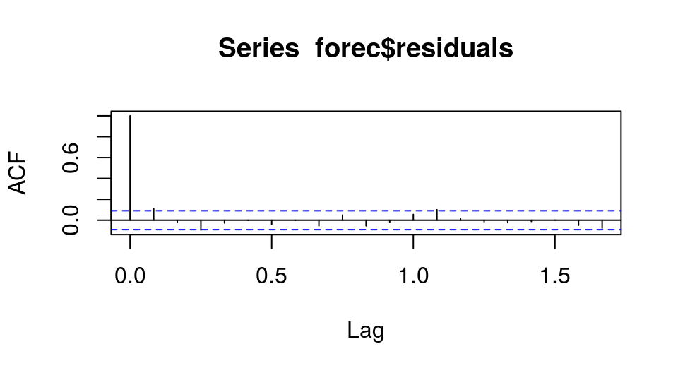
> Box.test(forec$residuals, lag=20, type="Ljung-Box") ... X-squared = 25.896, df = 20, p-value = 0.1693
p值>0.05，不足以判定样本内预测误差在滞后1-20阶时是非零自相关的。(可认为不规则部分是白噪声)
Holt-Winters指数平滑法(3)
[5] 预测误差诊断
hist(forec$residuals, freq=FALSE) lines(density(forec$residuals, na.rm=T), lwd=2)
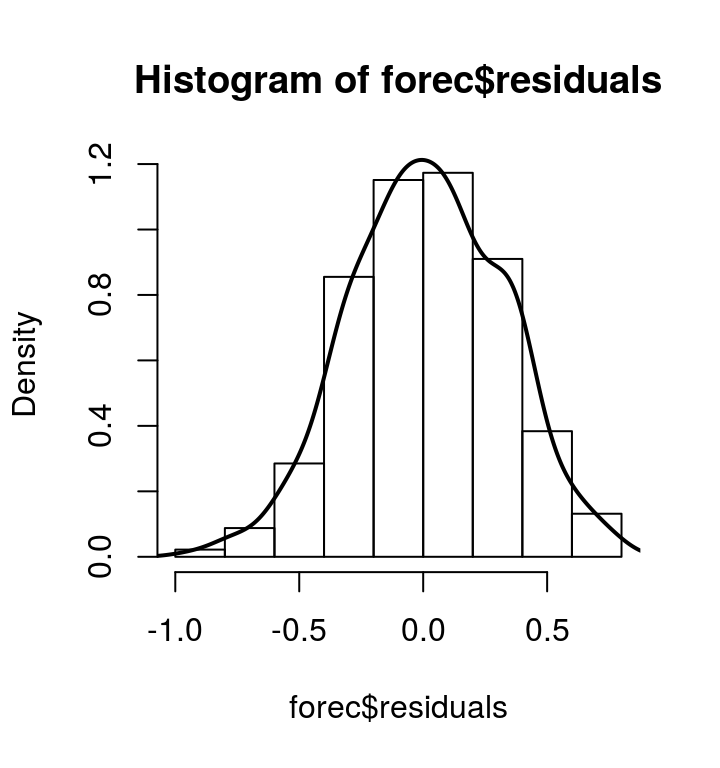
预测误差大体服从零均值正态分布，方差前后也大体无变化。 模型可不用再改良。
plot(forec$residuals, main="Forecast Residuals")
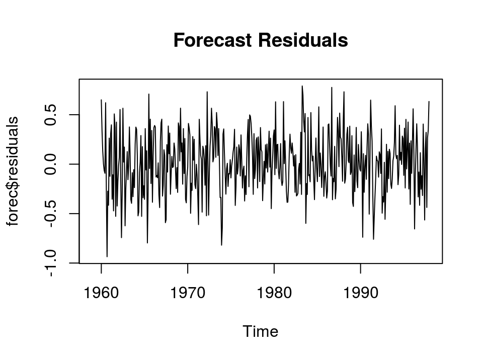
ARIMA模型
整合移动平均自回归(ARIMA)模型
ARIMA是时序分析中最常用的经典方法。它包含一个确定（explicit）的统计模型用于处理时间序列的不规则部分，而且允许不规则部分自相关。
通常先差分，把长期趋势、固定周期等信息提取出来，将非平稳序列变为平稳(stationary)序列后进行分析。剩余部分等价于一个ARMA(p,q)模型：
- 如不平稳，
diff差分， ARIMA(p, d, q) ==> ARMA(p, q) acf自回归图，判定q系数pacf偏自回归图，判定p阶数- 拟合
arima(p, d, q)模型并预测- 如有季节性，选取合理的 arima(p, d, q)(P, D, Q)m 模型
- 检验模型残差
差分及增强的Dickey-Fuller单位根检验
library(forecast) ap <- log(tsclean(AirPassengers)) ap1 <- ts(ap[1:120], start=c(1949,1), freq=12) plot(as.xts(diff(ap1, 1)), main="Diff=1")
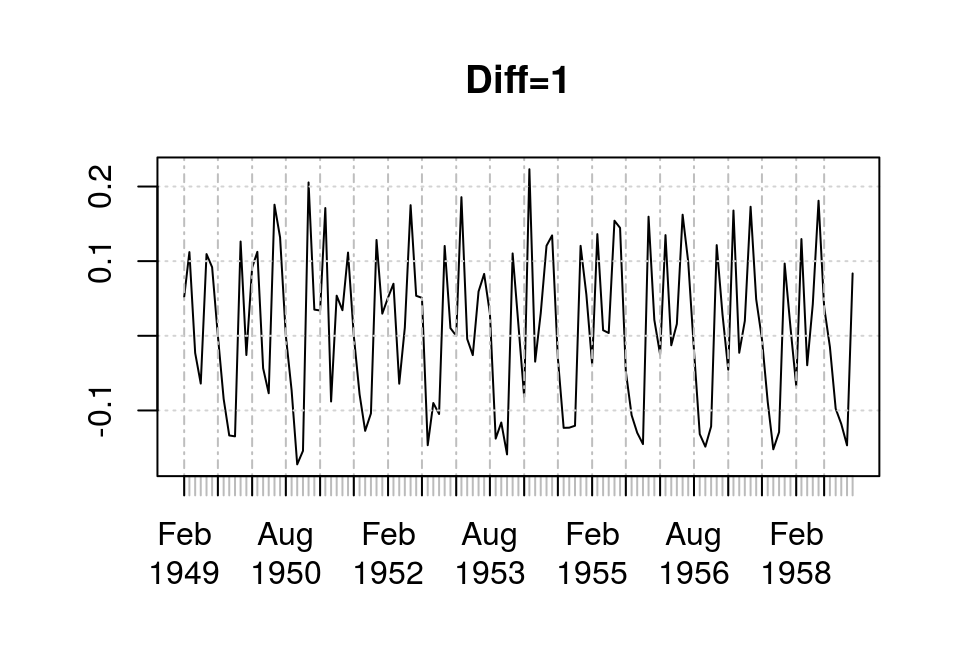
ADF平稳性检验
> library(tseries)
> adf.test(diff(ap1, 1), k=0)
Augmented Dickey-Fuller Test
data: diff(ap1, 1)
Dickey-Fuller = -9.1113, Lag order = 0, p-value = 0.01
alternative hypothesis: stationary
1阶差分后，AirPassengers数据(去掉季节趋势)可认为是平稳的
自回归图及偏自回归图
- ACF: 滞后1阶起，自相关值即截尾 -> q=0或1
acf(diff(ap1, 1), lag.max=48)
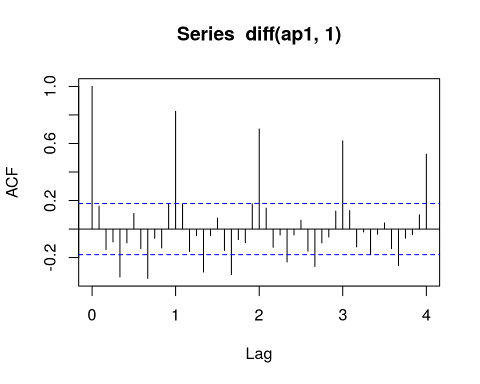
- PACF: 滞后1阶起，偏自相关值即截尾 -> p=0
pacf(diff(ap1, 1), lag.max=48)
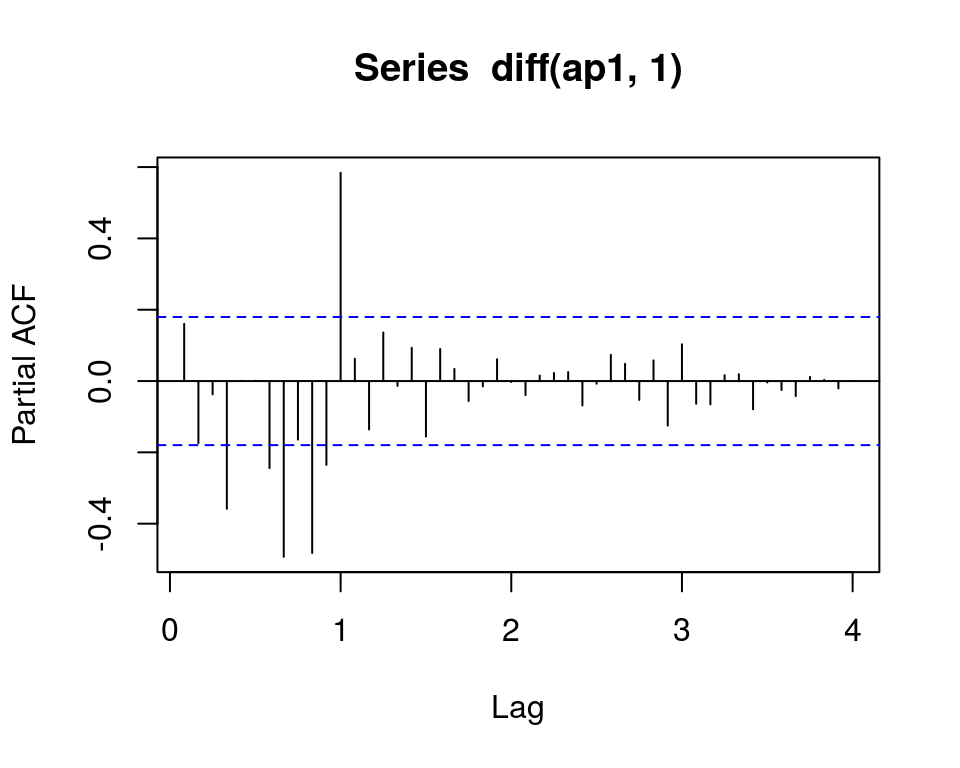
构建Arima模型
Arima(p, d, q)(P, D, Q)m模型选择原则
- AIC或BIC尽可能小
- 参数尽可能少(尽可能简单)
- 可参考
auto.arima
(P, D, Q)m季节性参数的确定
- 分解时序观察到周期为12的季节性 -> D=1, m=12
- 差分后ACF图仍有周期为12的季节性 -> Q=1, m=12
- 差分后PACF图没有显示出明显的周期性 -> P=0
> m1 <- auto.arima(ap1); m1
Series: ap1
ARIMA(0,1,1)(0,1,1)[12]
Coefficients:
ma1 sma1
-0.3674 -0.5686
s.e. 0.1012 0.0892
sigma^2 estimated as 0.001384:
log likelihood=199.07
AIC=-392.14 AICc=-391.9 BIC=-384.12
> m2 <- Arima(ap1, order=c(0, 1, 0),
+ seasonal=list(order=c(0, 1, 1), freq=12))
> m3 <- Arima(ap1, order=c(0, 1, 1),
+ seasonal=list(order=c(0, 1, 2), freq=12))
> sapply(list(m1, m2, m3), function(x) {
+ x[c('aic','bic')]})
[,1] [,2] [,3]
aic -392.1358 -382.356 -390.1689
bic -384.1173 -377.0104 -379.4776模型预测
m1 <- Arima(ap1, order=c(0, 1, 1), seasonal=list(order=c(0, 1, 1), freq=12)) plot(forecast(m1, 24)); lines(ap)
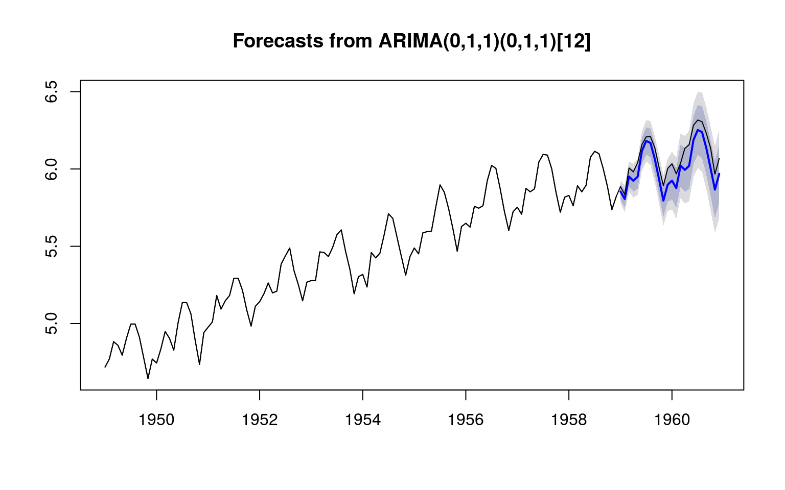
模型诊断: 残差自回归图
残差自回归及偏自回归值基本都不超过置信边界，可认为残差是白噪声(信息提取完全)。
resid <- ap1-m1$fitted tsdisplay(resid)
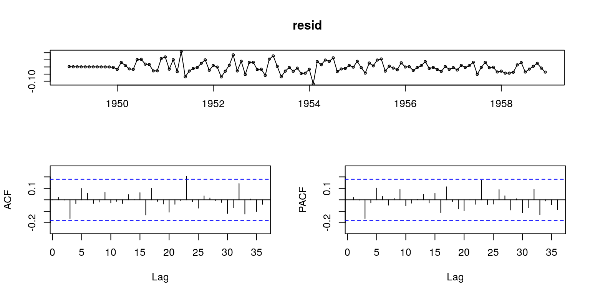
模型诊断: Ljung-Box检验
> Box.test(resid, lag=20, type="Ljung-Box")
Box-Ljung test
data: resid
X-squared = 12.679, df = 20, p-value = 0.8907
没有证据证明在滞后 1-20 阶中预测误差是非零自相关的，亦即可认为残差是白噪声序列(信息提取完全)。
Thank you!